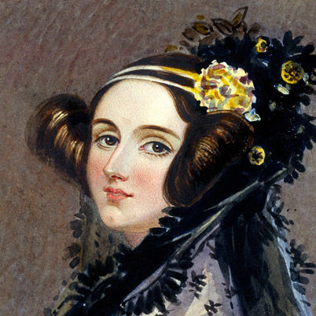

Augusta Ada King-Noel, Countess of Lovelace (née Byron; 10 December 1815 – 27 November 1852) was an English mathematician and writer, chiefly known for her work on Charles Babbage's proposed mechanical general-purpose computer, the Analytical Engine. She was the first to recognise that the machine had applications beyond pure calculation, and created the first algorithm intended to be carried out by such a machine. As a result, she is often regarded as the first to recognise the full potential of a "computing machine" and the first computer programmer.
Ada Lovelace was the only legitimate child of the poet Lord Byron, and his wife Anne Isabella Milbanke ("Annabella"), Lady Wentworth. All of Byron's other children were born out of wedlock to other women. Byron separated from his wife a month after Ada was born and left England forever four months later, eventually dying of disease in the Greek War of Independence when Ada was eight years old. Her mother remained bitter towards Lord Byron and promoted Ada's interest in mathematics and logic in an effort to prevent her from developing what she saw as the insanity seen in her father, but Ada remained interested in him despite this (and was, upon her eventual death, buried next to him at her request). Often ill, she spent most of her childhood sick. Ada married William King in 1835. King was made Earl of Lovelace in 1838, and she became Countess of Lovelace.
